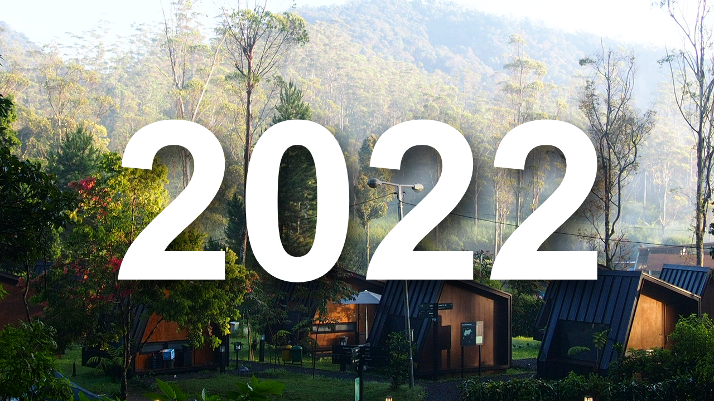

2022 Recap
29 December 2022
By Wicaksono Hanif Supriyanto
Tahun 2022 sudah berakhir. Kini saatnya gue berkaca tentang apa saja yang sudah terjadi selama tahun ini. Bagi gue dan mungkin kebanyakan orang setuju bahwa setiap tahun pasti punya ceritanya masing-masing dan tak terkecuali tahun 2022 ini. Mungkin kalau ada kalimat yang tepat untuk menggambarkan tahun 2022 bagi gue adalah sebuah harapan baru dan adanya hal-hal di masa lampau yang seakan hadir kembali di tahun ini.
Semenjak tahun 2020, rasanya gue memasuki fase kehidupan yang sangat berbeda, mungkin semua orang juga merasakan hal yang sama. Kita semua tahu kalau hampir seluruh umat manusia terancam virus yang punya potensi mematikan itu. Hampir seluruh aktivitas dipindahkan ke rumah masing-masing. Awalnya gue kira ini semua akan teratasi dengan cepat, namun nyatanya bencana ini berlangsung cukup lama. Di titik inilah kehidupan mulai berbeda, sampai-sampai adanya penggunaan istilah New Normal yang akhirnya menjadi title di tahun tersebut. Dampak dari tahun 2020 tersebut masih membayangi tahun selanjutnya, yaitu 2021. Hingga pada akhirnya bayangan itu lama-kelamaan menghilang di tahun 2022.
Tahun 2022 ini serasa punya sentuhan yang berbeda. Di awal tahun banyak sekolah sudah mulai nekat untuk melakukan tatap muka secara full capacity, walaupun masih dalam pembatasan waktu KBM. Virus memang belum sepenuhnya hilang dan sekolah gue sempat kembali ditutup sementara akibat lonjakan kasus. Tapi selang beberapa minggu akhirnya kembali dibuka dan hingga kini berjalan secara full capacity dan jam KBM kembali normal layaknya sebuah kehidupan yang dianggap “normal” sebelum pandemi terjadi.
Momen spesial tahun 2022 ini jatuh pada bulan Februari, dimana gue merayakan ulang tahun yang ke-17. Dari awal gue memang tidak merencanakan perayaan besar-besaran layaknya pesta sweet seventeen pada umumnya, dan emang gue juga nggak mau sih hehe. Justru gue malah minta dibelikan kendaraan pada saat itu, untuk menjadi milik gue sendiri. Pada akhirnya gue dibelikan sebuah motor (scooter) matic sebagai kendaraan sehari-hari. Bagi gue hadiah motor ini merupakan salah satu hadiah yang spesial, karena mengajarkan banyak pelajaran berharga dalam hidup, salah satu yang terpenting adalah tanggung jawab. Selain itu hal yang gue tunggu-tunggu adalah kepemilikan KTP dan SIM. Akhirnya secara legal gue bisa berkendara di jalan raya, dan ini adalah sesuatu yang gue tunggu-tunggu sejak lama.
Sepanjang semester pertama di tahun 2022, kesibukan gue nggak jauh-jauh dari berorganisasi dan ikut kompetisi. Di organisasi sekolah, gue menikmati masa-masa menjabat sebagai MPK dan ikut mengawasi banyak kegiatan MPK/OSIS. Ada pula proyek yang cukup intens bagi gue yaitu menjadi produser dalam pembuatan film pendek. Film pendek ini menjadi tugas akhir dalam kegiatan Ekstrakurikuler Sinematografi di sekolah gue. Selain itu gue juga mengikuti Kompetisi Sains Nasional bidang Informatika (Komputer), namun sayangnya gugur di tingkat kota.
Tapi kegagalan di kompetisi tersebut malah membuka peluang untuk gue dan teman-teman gue yang sama-sama tidak lolos, untuk bisa ikut kompetisi lain yang diselenggarakan oleh pihak swasta. Kebetulan kompetisi tersebut diselenggarakan oleh Prestasi Junior Indonesia yang bekerja sama salah dengan satu perusahaan IT ternama yaitu HP (Hewlett-Packard). Secara garis besar, kami ditantang untuk menciptakan sebuah inovasi menggunakan aplikasi 3D. Pada akhirnya kami sepakat untuk membuat sebuah showroom mobil digital yang dilengkapi dengan beberapa fitur-fitur. Berkat kerja sama dan komunikasi yang baik, Alhamdulillah kami berhasil menjadi 2nd runner up, alias juara 3. Sebuah pengalaman yang berkesan, terlebih, hadiah uang dari kompetisi ini cukup untuk menambah uang saku selama liburan kenaikan kelas hehe…
2022 memang tidak sepenuhnya mulus, ada segelintir masalah, terutama soal hubungan. Tapi ketika itu semua diselesaikan secara baik-baik tentu ada jalan keluarnya. Saat ini gue memang sudah tidak memiliki hubungan sama sekali. Pada akhirnya gue lebih lega dan tahu harus melangkah kemana.
Mengetahui tentang apa yang terjadi pada gue saat itu, ayah gue iseng ngajakin gue untuk sekedar jalan-jalan di akhir pekan. Kala itu gue mengendarai mobil kesayangan gue, di tengah rintik hujan di sore hari. Sambil mendengarkan lagu berjudul Father to Son ciptaan Phil Collins, ayah gue memberikan nasihat-nasihat berharga kepada gue, yaitu untuk selalu move on dan bersabar menunggu waktu yang tepat, bahwasanya banyak hal yang harus dipikirkan selain cinta melulu. Memang terkadang momen antara gue dan ayah gue inilah yang rasanya sama sekali gak bisa dijelaskan dengan kata-kata.
Tahun 2022 juga bukan merupakan tahun yang menyenangkan apabila kalian termasuk penggemar Ferrari di F1. Musim ini Ferrari membuat berbagai macam blunder yang sama sekali tidak bisa diterima, dan ujung-ujungnya gue memilih untuk tidak nonton F1 di akhir pekan daripada harus sakit hati melihat kenyataan Ferrari musim ini.
3 bulan yang tersisa di tahun 2022 adalah saat yang tepat untuk berbenah. Kini sudah saatnya gue mengakhiri masa jabatan gue di organisasi sekolah yang gue ikuti, berat memang rasanya, tapi mau tidak mau harus gue lakukan. Mungkin salah satu kado terbaik menjelang akhir masa jabatan gue adalah HSC (High School Celebration) 34 tahun ini, yang akhirnya diadakan secara offline.
Di 3 bulan terakhir ini gue juga berhasil melakukan pengembangan website pribadi yang artikelnya sedang kalian baca saat ini, yaitu Catatan Mingguan Hanif. Kedepannya gue berharap semoga website ini punya lebih banyak konten dan tentunya bermanfaat bagi para pembaca, Amin…
Oh iya, jikalau harus memilih trip mana yang paling berkesan tahun ini, gue akan memilih trip ke Bandung pada bulan Agustus lalu. Trip tersebut merupakan salah satu trip terakhir bersama kakak-kakak gue, sebelum kakak tertua gue menikah di akhir tahun 2022 ini. Kami yakin suatu saat nanti kami tidak akan bisa selalu bersama, oleh karena itu trip ini merupakan salah satu yang paling emosional.
Secara keseluruhan, menurut gue, 2022 merupakan tahun dimana ada sebuah harapan baru, serta keseruan dan keceriaan yang dulunya ada sebelum era pandemi, seakan hadir kembali tahun ini. Memang tidak semua hal berjalan dengan mulus, tetapi jauh lebih baik ketimbang 2 tahun kebelakang. Selain itu banyak pelajaran berharga yang gue dapatkan dari keluarga maupun teman. Kini saatnya menatap masa depan dan fokus untuk masuk ke dunia perkuliahan tahun di tahun 2023 nanti.